KỶ NIỆM 35 NĂM NGÀY NHÀ GIÁO VIỆT NAM 20-11 THPT CHUYÊN NGUYỄN BỈNH KHIÊM - NHÌN LẠI MỘT CHẶNG ĐƯỜNG VÀ CHIA TAY NHÀ GIÁO HỒ XUÂN LONG - NGUYỄN THỊ NGỌC ÉN VỀ HƯU

Lần cập nhật cuối lúc Thứ bảy, 02 Tháng 12 2017 09:54 Viết bởi Administrator Thứ bảy, 02 Tháng 12 2017 08:21
Ngày Nhà giáo Việt Nam năm nay đã đến trong khi người dân Quảng Nam đang đau đáu hướng về những vùng quê vẫn còn đang oằn mình trong thiên tai lũ lụt. Với tinh thần đồng cảm sẻ chia sâu sắc, ngành giáo dục Tỉnh nhà đã không tổ chức nhiều các hoạt động sôi nổi để chào mừng như mọi năm. Mặc dù vậy, với mục đích đề cao ý nghĩa nhân văn cao cả và tôn vinh truyền thống tốt đẹp tự ngàn đời của nghề dạy học, ngày 18 tháng 11 vừa qua, trường THPT Chuyên Nguyễn Bỉnh Khiêm long trọng tổ chức buổi họp mặt đơn giản nhưng trang trọng để kỷ niệm tròn 35 năm ngày Nhà giáo Việt Nam (20/ 11/ 1982 - 20/ 11/ 2017).
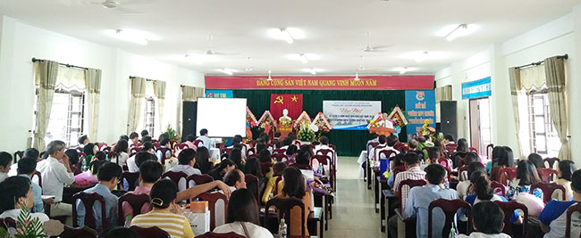
Tại buổi họp mặt này, hội đồng sư phạm nhà trường đã cùng nhau nhìn lại chặng đường ba mươi lăm năm đầy ý nghĩa đối với sự nghiệp giáo dục tỉnh nhà nói chung và mười lăm năm trưởng thành và phát triển của trường THPT Chuyên Nguyễn Bỉnh Khiêm nói riêng. Đó là một hành trình dài đầy những trăn trở, trải qua nhiều thử thách để có thể đánh dấu một cách tự hào “THPT chuyên Nguyễn Bỉnh Khiêm” trên bản đồ các trường chuyên ngày hôm nay. Từ ngôi trường đầy tình thương và trách nhiệm này, các thế hệ học sinh đã trưởng thành, đã bay cao bay xa. Nhiều em được đi du học ở các trường Đại học danh tiếng trên thế giới, là những Thạc sĩ, Tiến sĩ có trình độ và năng lực nghiên cứu, giảng dạy trong và ngoài nước. Nhiều em đã là những cán bộ trẻ, có trình độ và năng lực chuyên môn vững vàng, phẩm chất chính trị tốt, hoàn thành xuất sắc nhiệm vụ được giao, góp phần vào sự phát triển kinh tế, chính trị, văn hoá giáo dục, an ninh quốc phòng của tỉnh nhà nói riêng và cả nước nói chung. Có được thành quả ấy là biết bao công sức của các thầy cô giáo trong hội đồng sư phạm trường THPT Chuyên Nguyễn Bỉnh Khiêm sau 15 năm trưởng thành và phát triển.
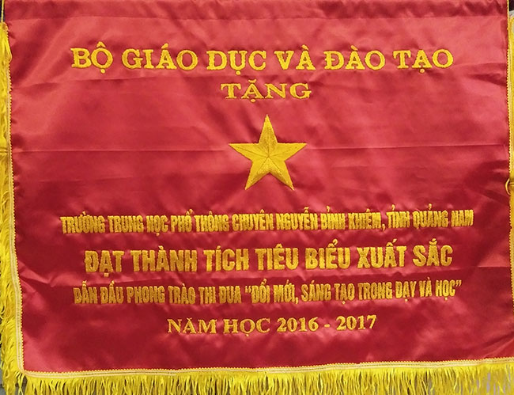
Năm học 2016 - 2017 vừa qua, trường THPT chuyên Nguyễn Bỉnh Khiêm đã có những bước tiến vượt bậc với những đột phá và chuyển biến tích cực. Cơ sở vật chất nhà trường được quan tâm đầu tư, hoàn thiện đáp ứng yêu cầu của một trường THPT Chuyên.
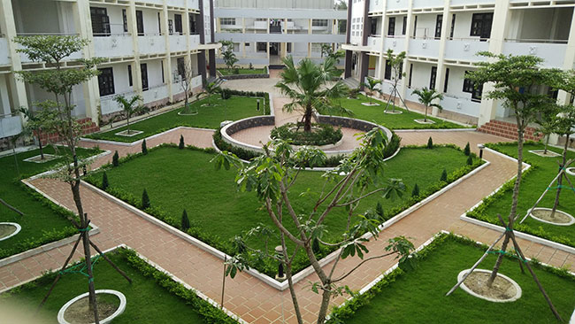
(Công trình tiểu hoa viên do Nhà máy lọc hóa dầu Dung Quất – Bình Sơn tặng. Ảnh: H.Phi))
Việc đổi mới nội dung chương trình giáo dục phổ thông, chuyên sâu và ứng dụng CNTT trong quản lý, dạy học tiếp tục được triển khai có hiệu quả. Công tác xã hội hoá giáo dục được triển khai rộng khắp và ngày càng đi vào chiều sâu, huy động được nhiều nguồn lực góp phần giúp cho nhà trường hoàn thành nhiệm vụ năm học. Chất lượng giáo dục hai mặt tiếp tục được nâng cao. Và thành tích của năm học này đã minh chứng cho hiệu quả giáo dục - đào tạo của nhà trường:
- 40 giải cấp quốc gia, trong đó có 22 giải về các bộ môn văn hoá. Em Trương Công Cường - học sinh 12 chuyên Toán đã lần thứ 2 lọt vào vòng 2 dự thi tuyển chọn đội tuyển Olympic quốc tế.
- 80 giải cấp khu vực, trong đó có 52 giải tại cuộc thi HSG của các trường chuyên khu vực Duyên hải - Đồng bằng bắc bộ 2017.
- 293 giải cấp tỉnh, trong đó có 195 giải các bộ môn văn hoá.
- Chất lượng trúng tuyển Đại học cũng được nâng cao rất nhiều. Trong kỳ tuyển sinh Đại học vừa qua, trường THPT chuyên Nguyễn Bỉnh Khiêm đã đạt được những kết quả đáng tự hào: 26 điểm 10, 02 học sinh đạt 2 điểm 10, 01 học sinh đạt điểm 10 duy nhất môn Ngữ văn trên toàn quốc. Nhiều học sinh trúng tuyển Đại học với điểm số rất cao trong phổ điểm từ 27 trở lên.
Bên cạnh chất lượng mũi nhọn và đại trà, phong trào Đoàn, hoạt động Giáo dục NGLL, phong trào VHVNTDTT, phong trào nghiên cứu khoa học trong học sinh cũng phát triển mạnh mẽ, đem lại hiệu quả cao, góp phần không nhỏ vào chất lượng giáo dục toàn diện của nhà trường. Nhiều sân chơi trí tuệ, bổ ích đã có sức hút lớn, lôi cuốn các em tham gia, tạo nên không khí vui học vô cùng sôi nổi, khơi dậy, phát triển tài năng và năng lực tiềm tàng trong các em, góp phần vào việc hình thành, rèn luyện những kỹ năng cần thiết cho các em sau này. Đặc biệt, trong năm học qua, nhà trường đã làm rất tốt công tác đối ngoại và quan hệ quốc tế, mời trợ giảng tiếng Anh từ chương trình Fullbright về giảng dạy tại trường, ký kết hợp tác với Đại học Tổng hợp quốc gia Kurgan của Liên Bang Nga về giáo dục - đào tạo. Nhà trường phối hợp với Trung tâm KH-VH Nga tổ chức thi Olympic Vật lý tuyển chọn học sinh du học Nga. Kết quả đã có 07 học sinh của nhà trường được học bổng du học Nga với học bổng toàn phần trong khuôn khổ hợp tác giữa Bộ GD-ĐT và chính phủ Liên Bang Nga.
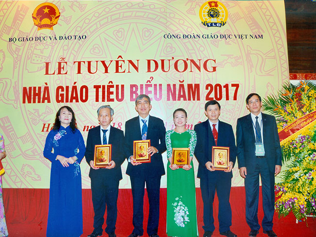
(Thầy Lê Nguyên Bảng – Hiệu trưởng nhà trường được Bộ GD-ĐT vinh danh Nhà giáo tiêu biểu xuất sắc)
Với những kết quả đạt được trong năm học qua, trường THPT Chuyên Nguyễn Bỉnh Khiêm được Bộ GD-ĐT tặng cờ thi đua xuất sắc khối THPT, UBND tỉnh Quảng Nam tặng Bằng khen và danh hiệu Tập thể lao động xuất sắc. Đặc biệt, trong dịp kỷ niệm 35 năm ngày NGVN, thầy Lê Nguyên Bảng – Hiệu trưởng nhà trường được Bộ GD-ĐT vinh danh Nhà giáo tiêu biểu xuất sắc.Thầy Trương Văn Quang và thầy Phạm Hữu Hùng được Sở GD-ĐT tỉnh nhà vinh danh.
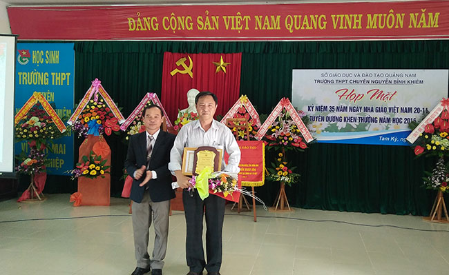
(Thầy Phạm Hữu Hùng được Sở GD-ĐT Quảng Nam vinh danh. Ảnh: H.Phi)
Ngoài ra, còn có nhiều cá nhân được danh hiệu Lao động tiên tiến, Chiến sĩ thi đua cơ sở. Thầy giáo Nguyễn Thành Khoa (Tổ trưởng Tổ Sử - Địa - Công dân) và cô giáo Từ Thị Như Phương (giáo viên Tổ Vật Lý) đạt danh hiệu Chiến sĩ thi đua cấp tỉnh, thầy giáo Bùi Thanh Sơn (giáo viên Tổ Sử - Địa – Công dân) được UBND tỉnh tặng Bằng khen.
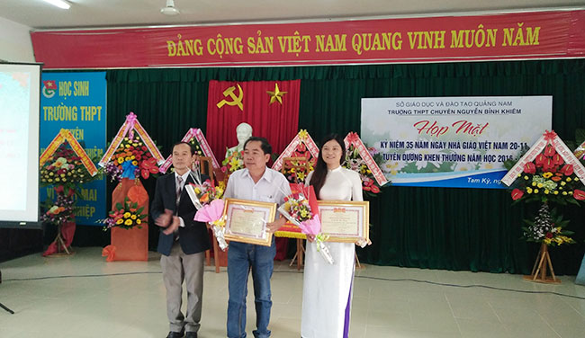
(Thầy Nguyễn Thành Khoa (Tổ trưởng Tổ Sử - Địa - Công dân) và cô giáo Từ Thị Như Phương (giáo viên Tổ Vật Lý) đạt danh hiệu Chiến sĩ thi đua cấp tỉnh. Ảnh: H.Phi)
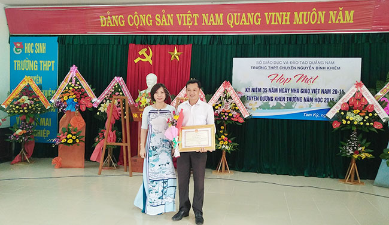
(Thầy Bùi Thanh Sơn (giáo viên Tổ Sử - Địa – Công dân) được UBND tỉnh tặng Bằng khen. Ảnh: H.Phi)
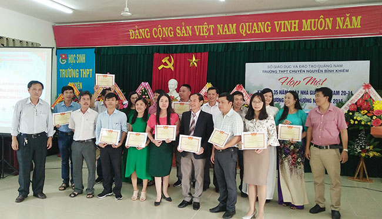
(16 cá nhân được công nhận chiến sỉ thi đua cơ sở năm 2016 - 2017. Ảnh: H.Phi)
Một số hình ảnh trong buổi kỷ niệm 35 năm ngày Nhà giáo Việt Nam.
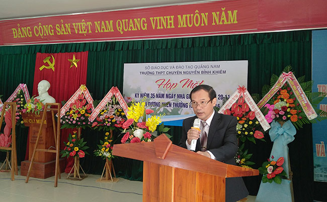
(Thầy Phan Văn Chương – Phó Hiệu trưởng phát biểu diễn văn kỷ niệm 35 năm ngày nhà giáo Việt Nam. Ảnh: H.Phi)
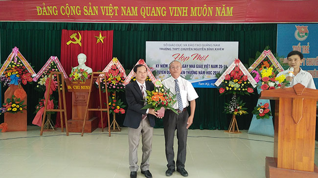
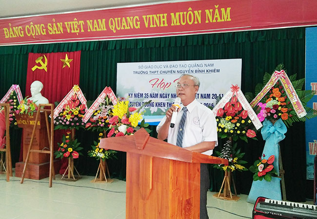
(Thầy Trần Hữu Giã – Nguyên là Hiệu trưởng về dự tặng hoa chúc mừng. Ảnh: H.Phi)
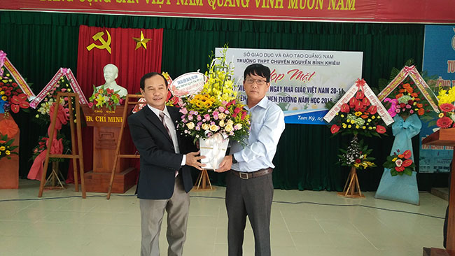
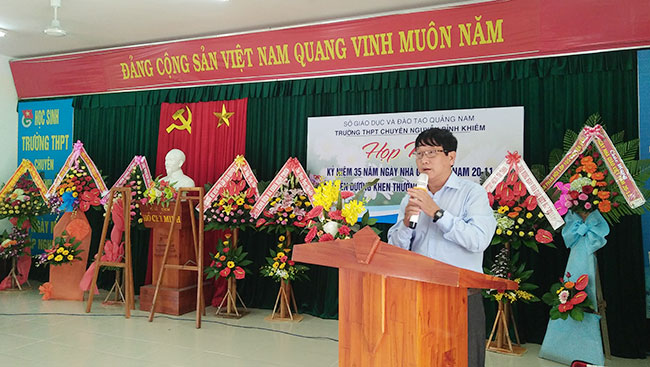
(Ông Nguyễn Xuân Hoàng – Trưởng ban ĐDCMHS trường tặng hoa và phát biểu chúc mừng. Ảnh: H.Phi)
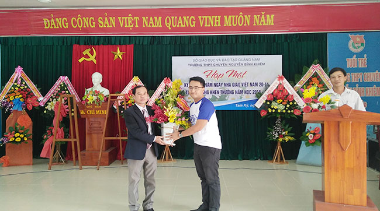
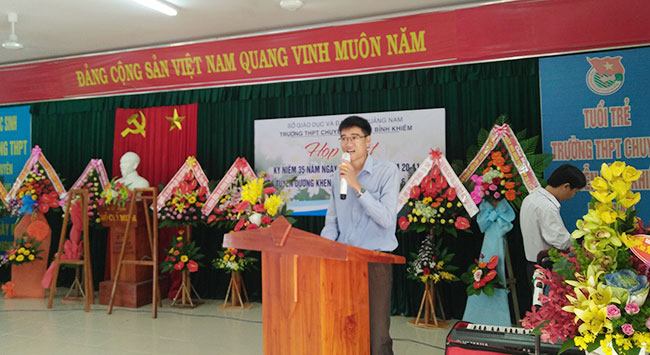
(Đại diện các em Hội Cựu học sinh về dự tặng hoa và phát biểu chúc mừng buổi họp mặt. Ảnh: H.Phi)
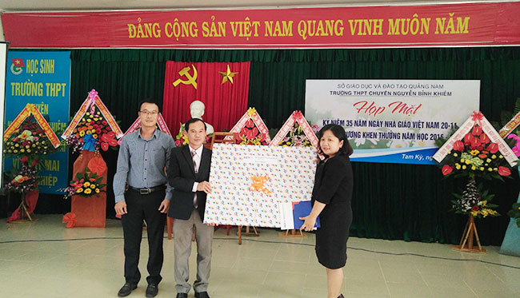
(Đại diện Ngân hàng BIDV chi nhánh Quảng Nam tặng quà chúc mừng. Ảnh: H.Phi)
Sau lễ kỷ niệm, hội đồng sư phạm nhà trường đã tổ chức buổi chia tay với hai thầy cô giáo về nghỉ hưu theo chế độ: thầy Hồ Xuân Long ( Tổ trưởng Tổ Hóa) và cô Nguyễn Thị Ngọc Én (Tổ phó Tổ Vật Lý).
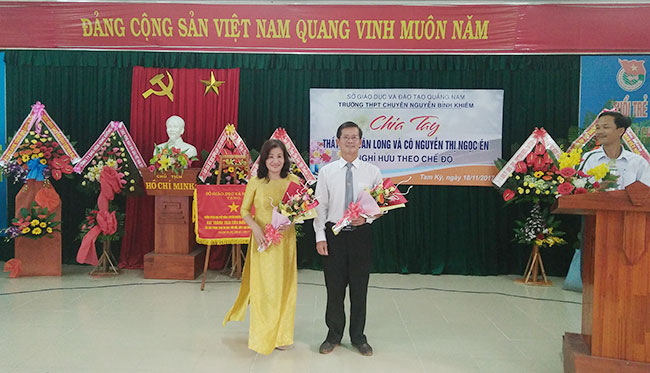
Đây là hai thầy cô giáo đã gắn bó với ngôi trường THPT chuyên Nguyễn Bỉnh Khiêm từ những ngày đầu mới thành lập, đã cùng trải qua những thăng trầm trong mười lăm năm để làm nên tên tuổi một ngôi trường. Buổi chia tay diễn ra trong không khí thật xúc động. Những giọt nước mắt đã rơi khi lắng nghe những chia sẻ chân thành của thầy cô. Hội đồng sư phạm nhà trường đã trân trọng ghi nhận những đóng góp lớn lao của thầy cô cho truyền thống của nhà trường.
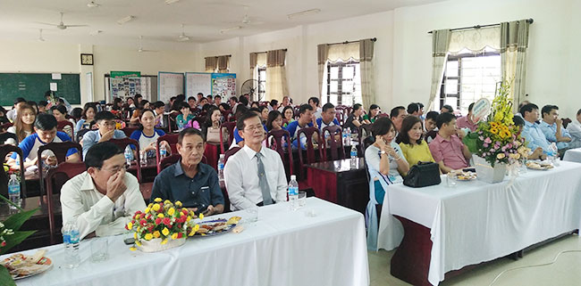
Và ngày 27 tháng 11 vừa qua, trong buổi lễ chào cờ đầu tuần, Đoàn trường cũng đã tổ chức cho học sinh toàn trường chia tay với thầy giáo Hồ Xuân Long và cô giáo Nguyễn Thị Ngọc Én. Các em đã lắng nghe những lời nhắn nhủ đầy tâm huyết của thầy cô và chân thành bày tỏ lòng tri ân của mình. Truyền thống tôn sư trọng đạo thật sự đã tỏa sáng dưới mái trường THPT Chuyên Nguyễn Bỉnh Khiêm.
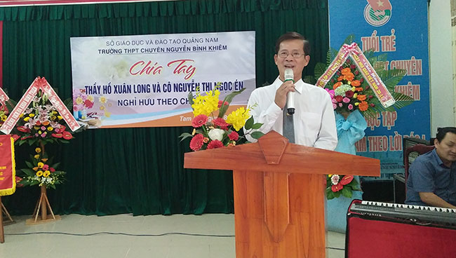
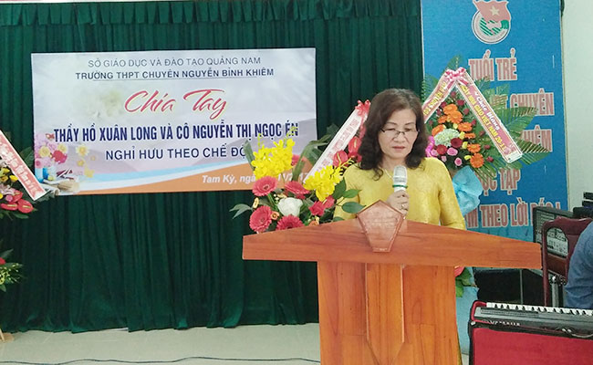
Một mùa Hiến chương nhà giáo lại đi qua. Nhìn lại một chặng đường đã qua để tự hào và cũng là để tiếp tục vững bước trên con đường còn rất dài và rất nhiều thử thách phía trước. Hội đồng sư phạm nhà trường cùng với các thế hệ học sinh đã và đang nỗ lực hết mình để giữ vững và tiếp tục phát huy truyền thống tốt đẹp mà các thế hệ đi trước đã dày công xây dựng. Trường THPT Chuyên Nguyễn Bỉnh Khiêm sẽ tiếp tục vững vàng trên hành trình vươn tới những đỉnh cao.
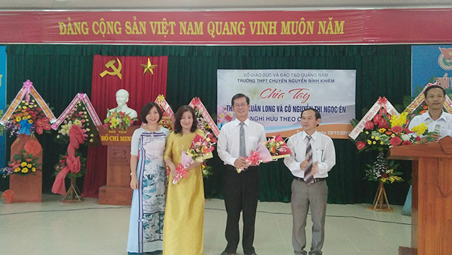
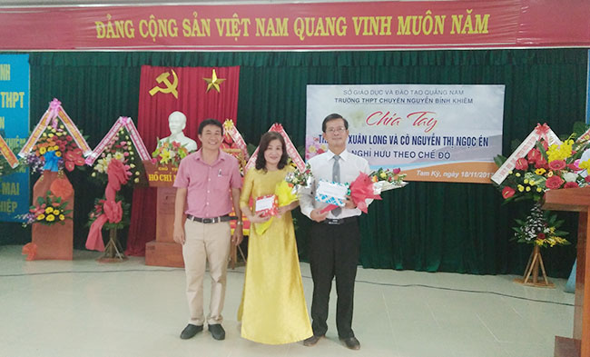
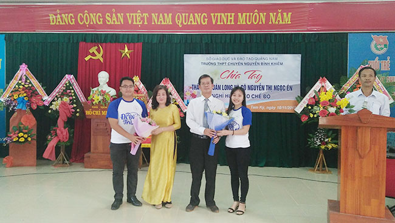
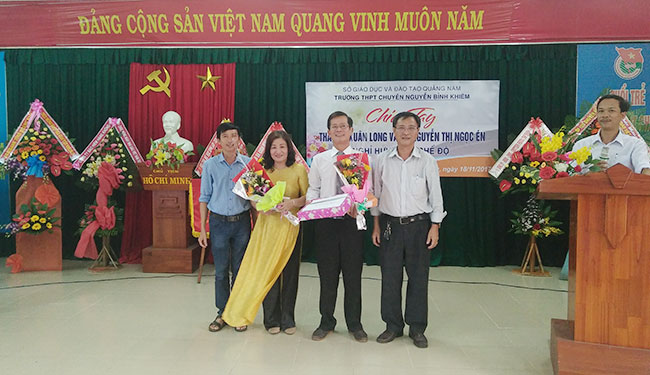
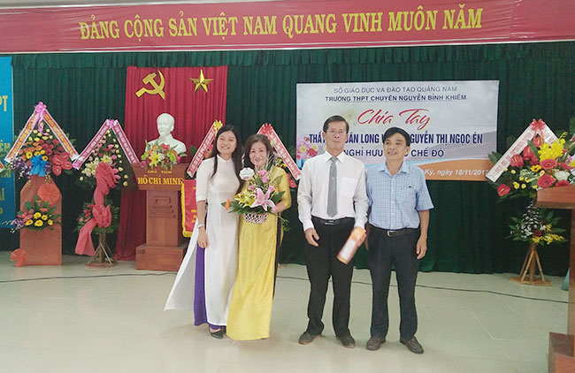
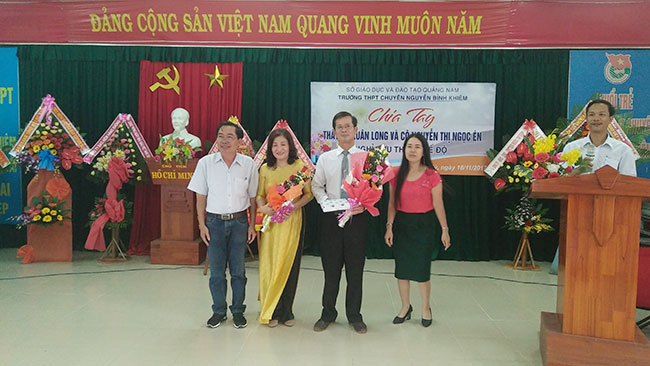
Tin bài: Cô Đoàn Thị Hồng - Giáo viên tổ Ngữ văn.
- 24/08/2018 08:31 - Chỉ thị về nhiệm vụ chủ yếu năm học 2018 - 2019 củ…
- 08/06/2018 08:48 - Học với thiên nhiên hiện thực hóa các bài giảng lý…
- 21/02/2018 10:15 - Kế hoạch và Nội quy Hội trại Khát vọng Nguyễn Bỉnh…
- 29/12/2017 09:43 - Nghiên cứu sinh Phạm Thị Huyền – Phó Hiệu trưởng b…
- 17/12/2017 20:58 - Trường THPT chuyên Nguyễn Bỉnh Khiêm và Trường Đại…
- 24/11/2017 07:41 - Phát động tham gia hưởng ứng Cuộc thi Những tấm gư…
- 26/10/2017 00:00 - Đại hội Đại biểu Đoàn TNCS trường THPT Chuyên Nguy…
- 23/10/2017 00:00 - Sinh hoạt tuyên truyền giáo dục pháp luật về trật …
- 26/09/2017 08:30 - Đề cương tuyên truyền Đại hội Đoàn TNCS Hồ Chí Min…
- 26/09/2017 08:22 - Tài liệu chuyên đề học tập tư tưởng, đạo đức, phon…